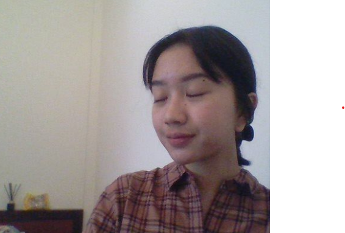

ZENOBIA WIRANDI ZENAIDE

Contact me
Passionated and Eagered Computer Science student in Diponegoro University with Informatics degree combined
with a strong sense of Analytical and Creative Design Thinking for creating, developing new fresh ideas towards
IT Industries. Applying the work ethics of Observe, Learn, and Develop.
Education level
Undergraduate in Computer Sceience, Informatics
2021-Present
- Created and Analyzed mobile apllication mock - up from scratch, focusing on UI/UX design and diagrams
Organizational and Committee experiences
Kronik Filmedia - Indonesia, Semarang
Jan 2022-Oct 2022
- Human Resource Development, A Student Activity Unit that accommodates students creativity and passion toward Filming Industries, including Film making, Acting,
Editing, Directing, Marketing.
I - GATE - Indonesia, Semarang
Sep 2022-Mar 2023
- Created and Inovated the first DIY photobooth enhancing Teamwork, Creativity. Used by 200+ students.
- Embellished the event with Artistic Decorations to represent its initial vision.
- Supervised the photobooth section, keeping it conditioned
I - CONSOLE - Indonesia, Semarang
- Facilitator, Supervised, Mentored, Assisted a group of new students in Diponegoro University, consisting of 12 new students.
POSITIF - Indonesia, Semarang
- Volleyball Coordinator, Coordinated the VolleyBall tournament, Making sure everything's on track. Requires good communication skills
- Informatics. Created a VolleyBall tournament match scheme, consisting 6 matches.
Licenses, Certifications and Skills
Modules Taken:
- 2023-Oracle Database 11g : Program with PL/SQL
- 2023-Oracle Database 12: SQL Fudamentals
Language Mastery:
Others:
{kind=link}